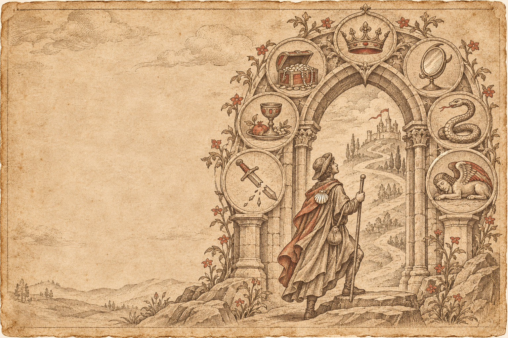

Pride
Pride is associated with excessive self-importance, arrogance and the desire for admiration or recognition.
Explore Pride →
Pride. Greed. Lust. Envy. Gluttony. Wrath. Sloth.
Everyone has a darker side.
Discover your dominant deadly sin and explore
what it may reveal about your personality.
✓ Free Online Quiz · ✓ Explore Your Personality · ✓ Discover Your Sin

Discover the seven sides of human nature.
The 7 Deadly Sins Test, also known as the Seven Deadly Sins Personality Test, is a free online personality quiz inspired by seven traditional human vices: Pride, Greed, Lust, Envy, Gluttony, Wrath and Sloth.
The seven deadly sins have influenced religion, philosophy, literature, art and popular culture for centuries. Today, they also provide an interesting framework for reflecting on human desires, motivations and emotional tendencies.
Curious about "What is my deadly sin?" This personality quiz invites you to explore your habits, preferences and reactions through the lens of the seven deadly sins.
The test is intended for entertainment and personal reflection rather than clinical psychological assessment.
Each deadly sin represents a different aspect of human desire, emotion or behavior. Explore their meanings and discover which one resonates with you.
Pride is associated with excessive self-importance, arrogance and the desire for admiration or recognition.
Explore Pride →Greed represents an excessive desire for wealth, possessions, power or personal gain.
Explore Greed →Lust is traditionally associated with intense desire and the pursuit of physical gratification.
Explore Lust →Envy involves resentment toward another person's advantages, achievements or possessions.
Explore Envy →Gluttony represents excessive consumption, indulgence and the pursuit of pleasure beyond moderation.
Explore Gluttony →Wrath is associated with intense anger, resentment, hostility and uncontrolled emotional reactions.
Explore Wrath →Sloth represents apathy, avoidance, procrastination and reluctance to engage with responsibilities.
Explore Sloth →Discover your dominant deadly sin in three simple steps.
Visit the official website and begin the free Seven Deadly Sins Test.
Reflect on your thoughts, preferences, emotions and everyday behaviors.
Explore your personality result and learn about your dominant deadly sin.
Learn more about the seven deadly sins, personality traits and the free online quiz.
The 7 Deadly Sins Test is a free online personality quiz inspired by Pride, Greed, Lust, Envy, Gluttony, Wrath and Sloth. It offers an entertaining way to reflect on personality tendencies.
Your dominant deadly sin is the category that most closely reflects your responses to the personality quiz. Take the test to explore your result.
The traditional seven deadly sins are Pride, Greed, Lust, Envy, Gluttony, Wrath and Sloth.
Yes. You can access the free online personality quiz at 7deadlysins-test.org .
Yes. People may recognize aspects of several deadly sins in their personalities. Human behavior is complex and cannot be reduced to a single category.
The quiz is intended for entertainment and personal reflection. It should not be treated as a clinically validated personality assessment or psychological diagnosis.
Pride has often been described as a foundational sin in Christian theology. Interpretations vary across religious and philosophical traditions.
Visit the official 7 Deadly Sins Test website to start the free personality quiz.
Discover your dominant deadly sin and explore the seven sides of human nature. Your personality journey starts here.
DISCOVER MY DEADLY SINFree 7 Deadly Sins Personality Test